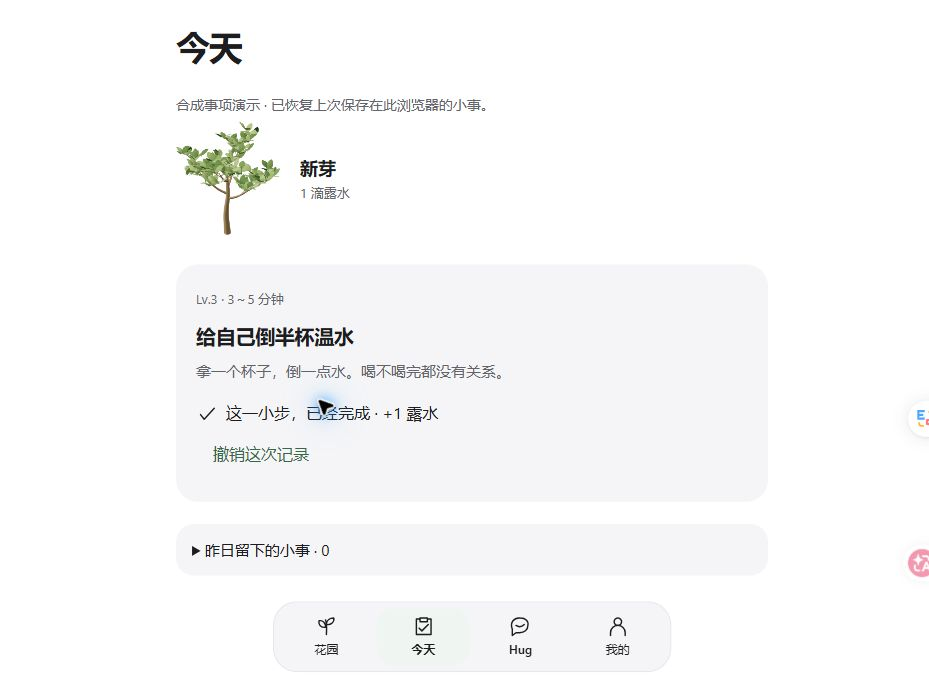

自我关怀 · 浏览器原型
HUG
让一个建议，
成为可以找回、
也能改变主意的小事
先看懂建议，再决定是否采纳。
稍后能找回，也可以改变主意。
完成与自愿休息，得到同等反馈。

浏览器普通合成事项演示，展示任务与保存行为，心理效果仍待研究。
自我关怀 · 浏览器原型
先看懂建议，再决定是否采纳。
稍后能找回，也可以改变主意。
完成与自愿休息，得到同等反馈。

浏览器普通合成事项演示，展示任务与保存行为，心理效果仍待研究。